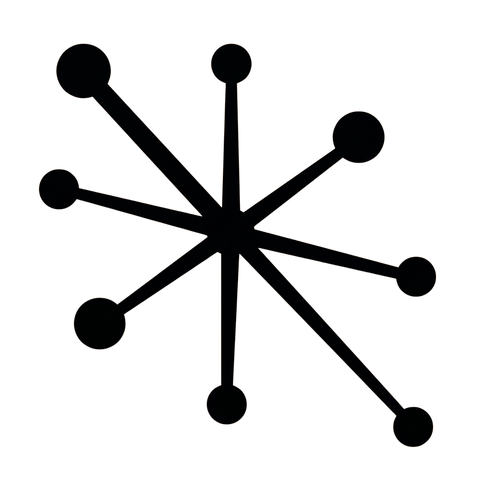
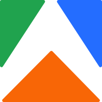

374 registos
134 hunting · 105 inbound · 135 oportunidades.

Atomica
Piloto Brasil → Portugal · até 1.500 contactos únicos por mês
374 registos históricos em três listas exportadas em agosto de 2026.
134 hunting · 105 inbound · 135 oportunidades.
Segmento preenchido: 80%; gancho de abordagem: 93%.
Só 20% das oportunidades ligadas a cliente; inbound: 104/105 em prospect, mediana ~342 dias.
Um fluxo com origem, qualificação e atividade rastreáveis.
LinkedIn, Google Maps via Apify, Instagram e pesquisa web. Até 1.500 contactos únicos por mês.
Até 2.000 contactos adicionais e 374 registos históricos; preservar campos, estados e comentários disponíveis.
ICP score compara dados pesquisados com critérios aprovados e prepara mensagens personalizadas.
O avançado inclui o simples e acrescenta oportunidades, scoring e automação progressiva.
Tudo o que é amarelo está no CRM simples; o ciano é o que o avançado acrescenta.


Google Maps via Apify, LinkedIn, Instagram e web
Leads, empresas e atividades num só lugar
Compara dados pesquisados com o ICP aprovado
Personalizadas; envio só com aprovação
Sincronizadas e registadas nos contactos
Intenção e engagement dos leads priorizados
Registos próprios; importa as 135 históricas
ICP fit + intenção + engagement
Envios automáticos em segmentos aprovados
DM/WhatsApp 24/7 pretendido; chamadas transcritas
Sugere ajustes a partir de aprovações e performance; mudar regras exige aprovação humana.
O escopo mantém-se; mudam as durações por fase.
ICP, dados, permissões e aceite; temas, CTAs e momentos de envio das sequências personalizadas.
CRM e fluxo comercial inicial.
Testes com dados e uso real; recolha de feedback e ajustes.

Recomendado: simples / 12 semanas · 60% na assinatura, 40% no aceite funcional.
| Opção | 12 semanas | 6 semanas |
|---|---|---|
| CRM simples | Recomendado€2.90060% €1.740 · 40% €1.160 | €3.85060% €2.310 · 40% €1.540 |
| CRM avançado | €4.80060% €2.880 · 40% €1.920 | €5.75060% €3.450 · 40% €2.300 |
Mensalidades começam no go-live; excedentes só após aprovação.
Decisões e feedback atempados mantêm o projeto no cronograma.
14 h · 7 sessões de 2 h · até 12 pessoas · exercícios apenas com Claude.
LLMs, prompting, alucinações e enviesamento; confidencialidade, segurança, RGPD e literacia do AI Act.
Prática: primeiro brief num Claude Project.Projects, pesquisa com fontes, Artifacts, AIO/GEO e controlo de qualidade.
Prática: pack de marca e voz + laboratório por função.Documentação Markdown, memória inspecionável como wiki e bases de conhecimento.
Prática: context vault e registo de decisões.Skills reutilizáveis; papéis, entradas, saídas, validações e aprovação humana.
Prática: uma skill e um workflow revisto.MCP, permissões de menor privilégio, tarefas agendadas quando disponíveis e ciclos de feedback.
Prática: fonte aprovada, rotina e uma iteração.Conteúdo, paid media, personalização, pesquisa IA, analytics, handoffs e pontos de aprovação.
Prática: workflow ponta a ponta com dados aprovados ou anonimizados.Capstone por função, feedback, responsável, métrica de sucesso e guardrails.
Prática: apresentar o AIOS e escolher uma rotina piloto.O Claude raciocina; o AIOS dá-lhe contexto, ferramentas, regras e controlo.
14 horas para construir um AIOS de Marketing aplicado ao trabalho da equipa.